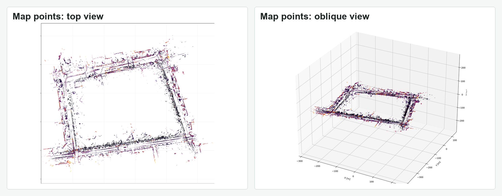

Multi-Sensor SLAM
Camera, LiDAR, radar, IMU/INS, and wheel-feedback integration for outdoor UGV experiments in visually and GNSS-degraded scenes.
PhD Student · Robotics and SLAM
I work on robot perception, multi-sensor SLAM, and field evaluation for UGVs in challenging outdoor environments.
Research Interests
Camera, LiDAR, radar, IMU/INS, and wheel-feedback integration for outdoor UGV experiments in visually and GNSS-degraded scenes.
Module-level improvements to learning-based radar odometry, preserving the original pose path while adding interpretable correspondence supervision.
Reusable Linux/Python tools for bag processing, sensor validation, trajectory analysis, runtime profiling, and result visualization.
Selected Work
Funding: UA-BGU
Built a ROS2-based UGV pipeline for real-world outdoor data collection, localization, mapping, and field debugging. The current public-facing results emphasize cross-sensor scene context and top-view trajectory evaluation under low-light, building-occluded, GNSS-challenged conditions.
Funding: MathWorks
Parallel work on learning-based radar odometry, focused on module-level correspondence supervision, frozen-backbone ablations, and pose-output consistency checks. The visual evidence on this page currently centers on the SLAM system while this direction is summarized at a project level.
Figures and Videos
These figures and clips come from private research artifacts. Public papers and datasets are not listed here because they are not available at this stage.



Middle segments from private UGV recordings, compressed to 5-8x speed. The mapping clips focus on the scene view, while the radar localization clip keeps the side panel visible for context.
CV
This site collects selected robotics projects, technical notes, experiment figures, and short descriptions of my research direction. The emphasis is on implemented systems, field evidence, and evaluation workflows.
Download CVContact
For advisor or research conversations, please use the contact information listed in my CV.
Research areas: SLAM, radar/LiDAR/camera perception, UGV autonomy, and robotics evaluation.